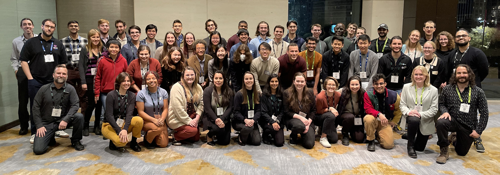
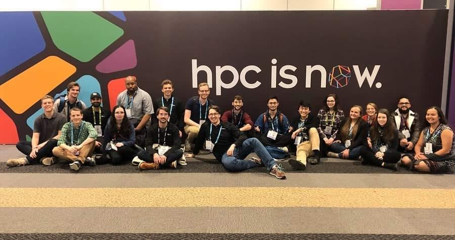
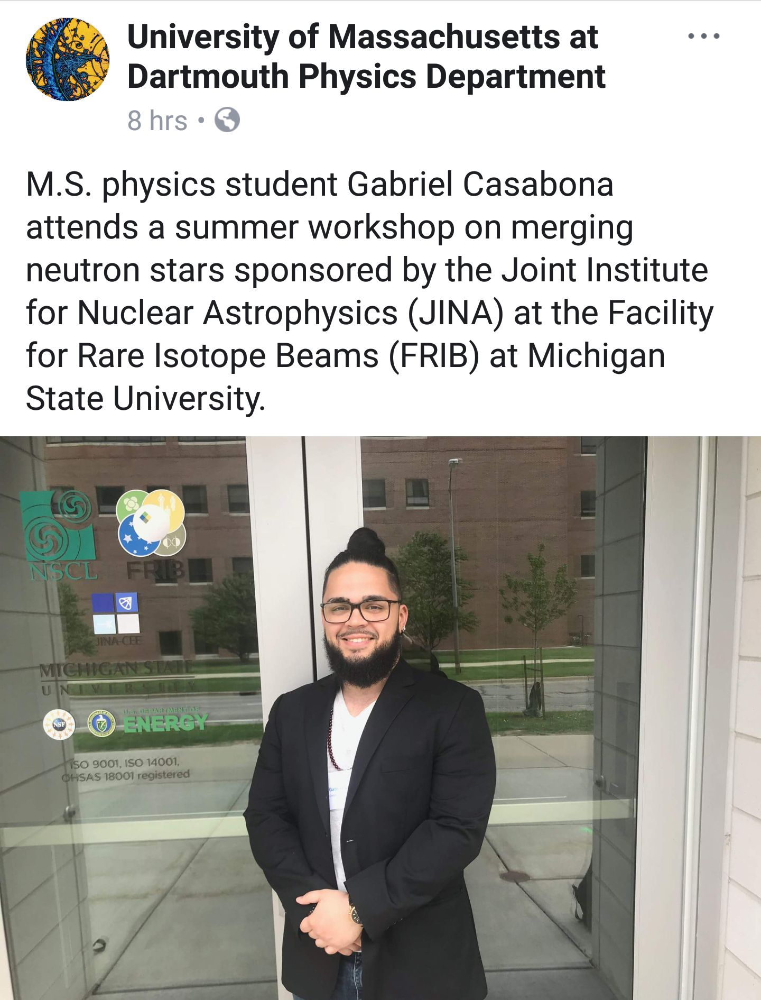
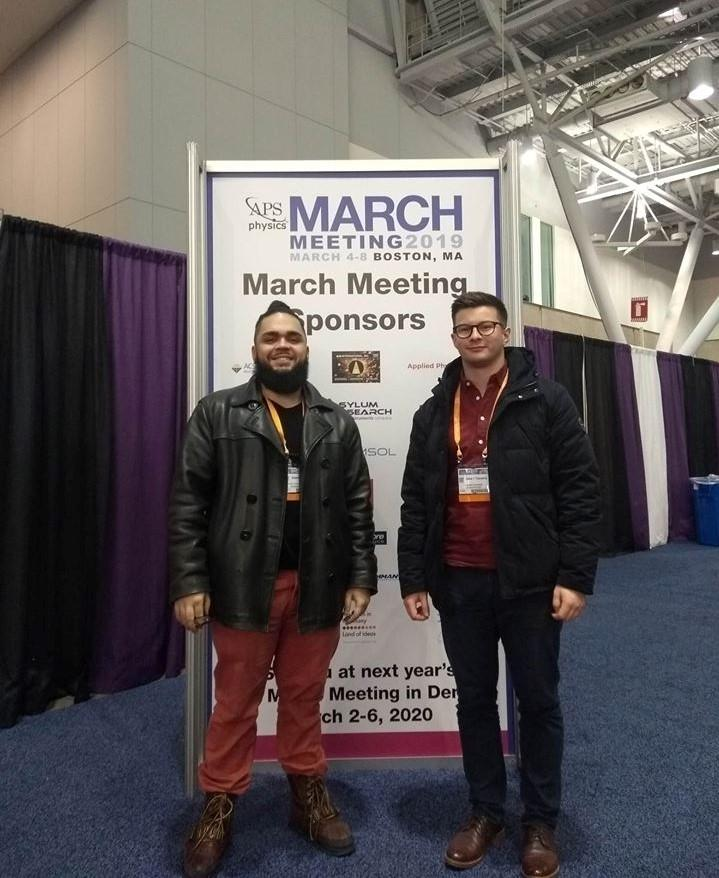
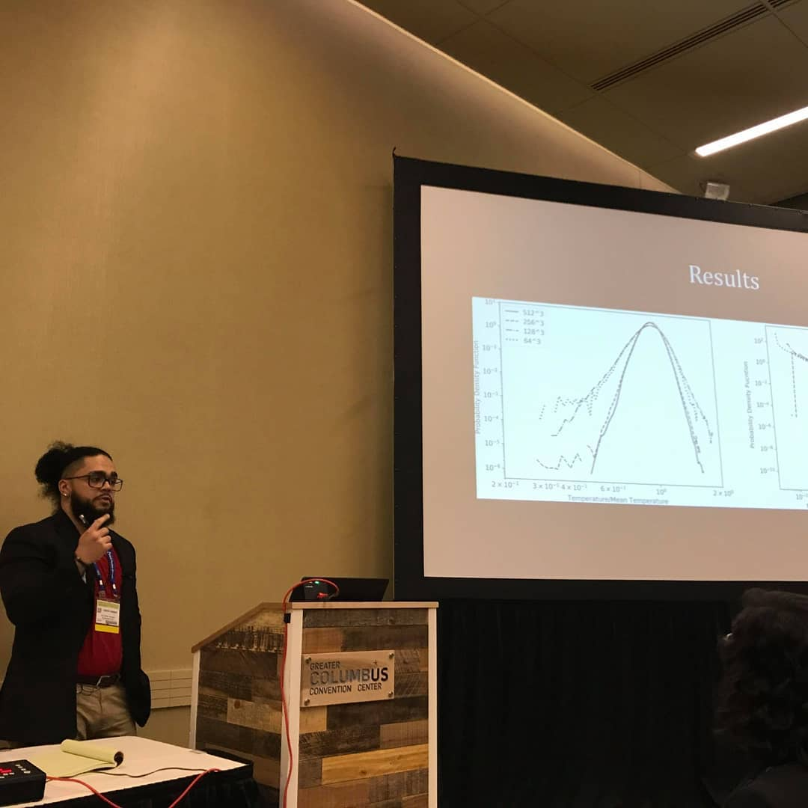

Intro

I earned my Bachelors of Science in Physics at Florida International University in the spring of 2017. While there I was a Resident Assistant for two years, and worked as a tutor. As a member of the Society of Physics, I participated in public outreach as a volunteer tutor and public science fairs. I was also introduced to computational research for the first time in the form of analyzing astronomical data to identify potential three-body stellar systems. For our version of a senior thesis, I focused on the fundamental physics and early developments in nMRI spectroscopy.
In the spring of 2019, I completed my Masters of Science in Physics at the University of Massachusetts Dartmouth. With my MS thesis adviser Professor Robert Fisher, my research group focused on Type Ia Supernovae (SNe Ia), from detonation models to nucleosynthesis. Our publications show a novel turbulently-driven detonation mechanism for electron-degenerate matter composed of combinations of carbon, helium, and oxygen. As a teaching assistant, I taught laboratory and problem-solving technique sessions to students learning Introductory Physics. I also advised on the improvements to future lab sessions, from lesson plans to constructing the new lab room.
At Northwestern University, I worked in Shane Larson's group, where we focused on physics related to LISA. Individually, I worked on developing a new relativistic fluid model to better understand neutron stars when they reach critical density. While there, I was funded as a DOE CSGF Fellow through the Krell Institute. The fellowship gave me the opportunity to work at Los Alamos National Laboratory, where I focused on code development to solve problems related to general relativistic crustal dynamics of neutron star mergers. With other collaborators based at LANL, I advised on research regarding the statistical comparisons of binary stellar evolution models between a population synthesis codebase, COSMIC, and stellar evolution codebase, MESA.
During my year of hiatus from academia, I worked as a teacher in a juvenile detention center in my hometown of Tampa, FL, through the Florida Virtual School. My responsibilities included facilitating an educational environment in classrooms consisting of students with behavioral and learning challenges, grades 5-12, either in the FLVS Florida Scholars Academy or GED program. While on paper I was the science teacher, I also helped teach mathematics, social studies, language arts, and computer science. I also actively participated in Individualized Education Programs (IEP) and Exceptional Student Education (ESE) programming for students requiring individualized support.
In the fall of 2025, I returned to UMassD to continue my PhD journey in the Engineering and Applied Sciences program, under the Computational Science and Engineering track. I now once again am working under Professor Fisher, where as a group we are continuing to focus on SNe Ia, from progenitor systems to post-process nucleosynthesis. My current focus is on developing a fully magnetized merger of binary white dwarf systems, from accretion to jet formation. Aside from using our usual codebase FLASHX, I am now utilizing AthenaK, a performance-portable version of the Athena++ astrophysical AMR-MHD code using Kokkos. Aside from my classes and research, I am also an instructor for College Algebra (MTH-148).
SC22
During the last year of my fellowship, we were given the opportunity to attend SC22 in Dallas, Texas. We attended tutorials in the first couple of days, where I took courses in the domain of data science. The rest of the week I attended various talks, networked with a variety of professionals, academics, and organizations, and was able to catch up with other fellows and members from the fellowship. This is a great conference to attend if you are involved in HPC.
SC19
During the first year of my fellowship, we were given the opportunity to attend SC19 in Denver, Colorado. Similar to SC22, we attended tutorials in the first couple of days, where this time I took courses in the domain of distributed programming, primarily OpenMP and MPI. The rest of the week I attended various talks, networked with a variety of professionals, academics, and organizations, and was able to catch up with, and even meet for the first time, other fellows and members from the fellowship. I even won a pair of Sennheiser headphones in a raffle! Once again, I will emphasize that this is a great conference to attend if you are involved in HPC.
NuGrid/JINA/ChETEC School: Software Tools for Simulations in Nuclear Astrophysics
In September of 2018, while a graduate student at the University of Massachusetts Dartmouth, I attended the NuGrid/JINA/ChETEC School at the University of Hull in Hull, England. Over the course of three days, we learned about nuclear astrophysics from a cross-disciplinary perspective. The workshop incorporated lectures from some of the top experts in the field from around the world, and hands-on sessions to learn about modeling and data analysis related to nucleosynthesis. Before returning home, I met up with some friends in London for a few days. As seen in the picture above, we had a great view of the infamous London Bridge from the tombs in Westminster Abbey.
Neutron Star Mergers for Non-Experts
In July of 2018, while a graduate student at the University of Massachusetts Dartmouth, my adviser and I attended Neutron Star Mergers for Non-Experts: GW 170817 in the Multi-Messenger Astronomy and FRIB Eras at Michigan State University in East Lansing, Michigan. At the time, it had been about a year since the first binary neutron star merger had been detected, giving birth to the field of multi-messenger astronomy. We learned about various aspects of the merger, from the nuclear physics involved to the gravitational waves emitted. It was my introduction to neutron stars, which would set the course for my future research endeavours. I am still thankful to my then adviser Robert Fisher for letting me tag along with him.
APS March 2019
In March of 2019, towards the end of my time as a graduate student at the University of Massachusetts Dartmouth, I attended the APS March 2019 meeting in Boston, Massachusetts. I presented my research, which would end up becoming my thesis, and later my paper, Turbulently-Driven Detonation Initiation in Electron-Degenerate Matter with Helium. One memory that particularly sticks out, was the fact that my laptop had crashed a few days prior to the conference. Thankfully, I met another presenter by the name of Jamie Townsend, who is in the picture above, who let me borrow his laptop for my presentation.
APS April 2018
In April of 2018, during my first year as a graduate student at the University of Massachusetts Dartmouth, I attended the APS April 2018 meeting in Columbus, Ohio. Although not my first conference attendance, it was my first time presenting. I presented my research, which would end up becoming my first paper as a co-author, Carbon Detonation Initiation in Turbulent Electron-Degenerate Matter.